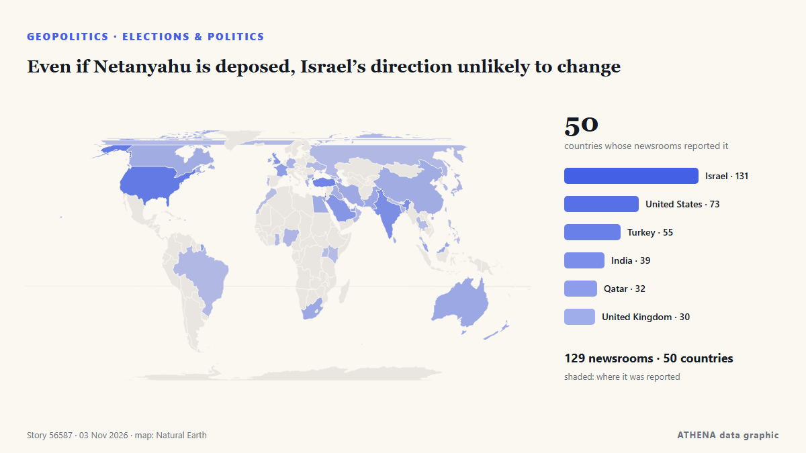

Even if Netanyahu is deposed, Israel’s direction unlikely to change

Former deputy governor tells Central Banking prime minister’s proposals are ‘stupid’ and ‘crazy’ من Central Banking
نشرته بشكل مستقل 131 مصدرًا في 50 دولة منذ 24 أكتوبر، وأول من نشره Responsible Statecraft؛ والتغطية تتراجع. يقدّر ATHENA الخطر بأنه متزايد (4.9/10)، ويعود ذلك أساسًا إلى خطورة الضرر الموصوف ونطاقه الجغرافي والقطاعي. الثقة 90٪ (مرتفعة)، وعدد المصادر المستقلة المؤكِّدة: 131، بمتوسط موثوقية للمصادر يبلغ 73٪. وسائل الإعلام حسب البلد: إسرائيل (15), الولايات المتحدة (5), الهند (3). التغطية: من 24 أكتوبر إلى 28 أكتوبر، 101 ساعة.
لماذا يهم: قد تغيّر التطورات الأمنية والدبلوماسية التحالفات والتجارة والأسواق إلى ما هو أبعد بكثير من الدول المعنية مباشرة.
ما الذي تغيّر: 87 تقارير جديدة من 42 غرف أخبار خلال 24 ساعة حتى 3 نوفمبر.
العنوان الأول: Israel counts votes with Netanyahu’s future on the line
تُعرض العناوين بالإنجليزية كما نُشرت.
نظرة سريعة
اختير وقُيِّم وكُتب وفق منهجية ATHENA المنشورة. لا يتدخل أي محرر في الأحداث بعينها. كيف يُنتَج ›
| 24 Oct 04:05 UTC | 1 |
|---|---|
| 24 Oct 16:05 UTC | 0 |
| 25 Oct 04:05 UTC | 0 |
| 25 Oct 16:05 UTC | 0 |
| 26 Oct 04:05 UTC | 1 |
| 26 Oct 16:05 UTC | 3 |
| 27 Oct 04:05 UTC | 7 |
| 27 Oct 16:05 UTC | 21 |
| 28 Oct 04:05 UTC | 35 |
| 28 Oct 16:05 UTC | 45 |
| 29 Oct 04:05 UTC | 61 |
| 29 Oct 16:05 UTC | 138 |
| 30 Oct 04:05 UTC | 115 |
| 30 Oct 16:05 UTC | 32 |
| 31 Oct 04:05 UTC | 24 |
| 31 Oct 16:05 UTC | 31 |
| 01 Nov 04:05 UTC | 25 |
| 01 Nov 16:05 UTC | 33 |
| 02 Nov 04:05 UTC | 38 |
| 02 Nov 16:05 UTC | 33 |
| 03 Nov 04:05 UTC | 57 |
| 03 Nov 16:05 UTC | 23 |
| 29 Oct 15:43 UTC | 5.1 |
|---|---|
| 29 Oct 22:07 UTC | 4.7 |
| 29 Oct 22:24 UTC | 5.2 |
| 29 Oct 22:32 UTC | 4.7 |
| 29 Oct 22:48 UTC | 5.2 |
| 29 Oct 23:01 UTC | 4.7 |
| 29 Oct 23:18 UTC | 5.2 |
| 29 Oct 23:20 UTC | 4.7 |
| 29 Oct 23:27 UTC | 5.2 |
| 29 Oct 23:45 UTC | 4.7 |
| 29 Oct 23:46 UTC | 5.2 |
| 30 Oct 06:41 UTC | 4.7 |
| 30 Oct 06:44 UTC | 5.2 |
| 30 Oct 06:48 UTC | 4.7 |
| 30 Oct 07:24 UTC | 5.2 |
| 30 Oct 07:53 UTC | 4.7 |
| 30 Oct 08:06 UTC | 5.2 |
| 30 Oct 18:55 UTC | 4.7 |
| 30 Oct 22:11 UTC | 5.5 |
| 31 Oct 21:01 UTC | 5.4 |
| 01 Nov 22:57 UTC | 4.9 |
| 02 Nov 09:46 UTC | 4.9 |
| 02 Nov 21:44 UTC | 4.9 |
| 02 Nov 22:05 UTC | 5.5 |
| 02 Nov 22:15 UTC | 4.9 |
| 02 Nov 23:10 UTC | 5.5 |
| 02 Nov 23:16 UTC | 4.9 |
| 03 Nov 18:21 UTC | 4.9 |
| 03 Nov 18:29 UTC | 5.5 |
| 03 Nov 19:13 UTC | 4.9 |
| 03 Nov 22:35 UTC | 4.9 |
لماذا هذه الأرقام
الأهمية
الخطر
الثقة
التغطية — من نشر الخبر ومتى
العنوان كما نُشر · يفتح الأصل- Responsible Statecraft · الولايات المتحدةWhat Israel's razor thin elections mean for Gaza and Iran
- Responsible Statecraft · الولايات المتحدةMeet the ex-Biden official working hard to rewrite history on Gaza
- Central Banking · المملكة المتحدةBank of Israel rebukes Netanyahu over sanction evading crypto plan
- Arab News · المملكة العربية السعوديةIsrael’s election could reshape its politics, without changing its course on Palestine
- Haaretz (English) · إسرائيلMy son is back from Gaza. Now it's time to take our country back
- Anadolu Agency (English) · تركياIsrael counts votes with Netanyahu’s future on the line
- The Jerusalem Post · إسرائيلActivists urge voters returning to Israel to save emergency hotline numbers in case of arrest
- Kyiv Post · أوكرانياWhat Israel’s Election Could Change for Ukraine and Relations With Russia
- The Jerusalem Post · إسرائيلSohlberg bars UTJ turnout reports from polling stations; watchdog urges enforcement
- Haaretz (English) · إسرائيلThese Palestinians woke up on Election Day still unsure whether to vote or boycott
- The Diplomat · اليابانThe Future of India-Israel Ties After Israel’s Election
- Tehran Times · إيرانIsraeli voters chose between ‘rabid yellow dogs and ravenous jackals’
- Haaretz (English) · إسرائيلNetanyahu has a sword hanging over his head – and Eisenkot can wield it
- The New Arab · INTBen-Gvir scrambles door-to-door for votes as Arab turnout surges
- Haaretz (English) · إسرائيلWe found the few Israelis who aren't voting – and are willing to talk about it
- The National · الإمارات العربية المتحدة'Call me': Israeli right-wing candidates go door to door pleading for votes
- Haaretz (English) · إسرائيلNetanyahu films campaign ad at Israeli city hall in violation of election law
- Haaretz (English) · إسرائيلInside the propaganda machine: How Netanyahu's campaign messages spread
- SABC News · جنوب أفريقياIsrael election will not change fate of Palestinian people: Mbeki
- NDTV · الهندMassive Arab-Israeli Poll Turnout, Netanyahu's "End To Jewish State" Charge
- France 24 English · فرنساIbrahim Abu Ahmad on Israeli election: 'Crucial for Arab citizens to have ally in Jewish community'
- The New York Times (World) · الولايات المتحدةIsraeli Voting Ends After Strong Turnout With No Clear Winner
- The New York Times (World) · الولايات المتحدةTwice before, Netanyahu was ousted then returned to power.
- Times of India · الهندElection Commision keeps RTI applicant waiting for reply
- Arab News · المملكة العربية السعوديةIsrael commits ‘mediacide’ to conceal its atrocities in Gaza, UN expert says
- Middle East Eye · INTPalestinian voter mobilisation a ‘truly historic development’, analyst says
- France 24 English · فرنساBibi's moment of truth: Israel votes in first general election since October 7 attacks
- Haaretz (English) · إسرائيلMuted mood on Tel Aviv's streets as voters react to Israel's election exit polls
- Haaretz (English) · إسرائيلHow will Netanyahu try to reframe his defeat as a huge victory
- Haaretz (English) · إسرائيلNetanyahu's scare campaign against Arab voters ended up pushing them to the polls
- Haaretz (English) · إسرائيلDecoding Israel's election: This is the jargon you need to know
- NPR · الولايات المتحدةPartnerships between ICE and local police surge, report finds
- Trinidad Express · ترينيداد وتوباغوAustin Immigration Lawyer Hosts Livestream To Discuss Immigration News & Updates
- Mehr News (English) · إيرانVIDEO: Boy bids farewell with sister after shooting by Israel
- The Jerusalem Post · إسرائيلAfter years of war, division, Israelis vote in record numbers to shape their future - editorial
- The Jerusalem Post · إسرائيلAnti-Netanyahu bloc vows not to let chance to replace government slip away
- Times of India · الهند'Whole tide turned': Trump takes credit for Netanyahu's showing in Israel elections
- The Independent · المملكة المتحدةTrump takes credit for Netanyahu election performance after endorsing Israeli prime minister
- Al Jazeera English · قطرKhouri: Strong Israel-Arab bloc result does not mean Israel has changed
- Haaretz (English) · إسرائيلIsraeli democracy has been given a chance. It may not get another